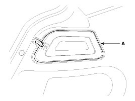
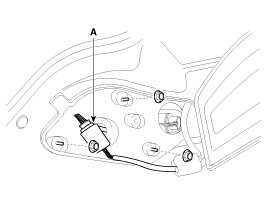
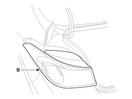
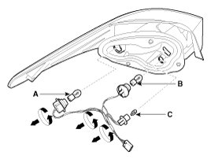
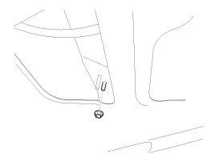
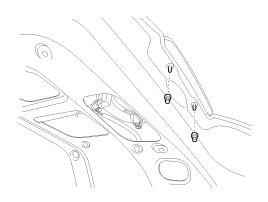
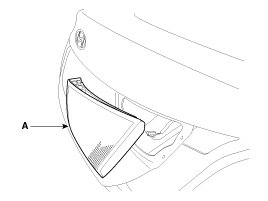
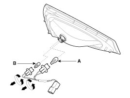

Tail Lamp: Service and Repair
Removal
Rear Combination lamp (Outside)
1. Disconnect the negative (-) battery terminal.
2. Remove the rear combination lamp cover (A).

3. Remove the mounting nuts (3EA).
4. Remove the rear combination lamp (B) after disconnecting the connector (A).


5. Replace the stop lamp (A), the tail lamp (B) and turn signal lamp (C) by turning the sockets counterclockwise.

Rear Combination Lamp (Inside)
1. Disconnect the negative (-) battery terminal.
2. Remove the trunk trim.
3. Remove the rear lamp assembly (A) after removing the nuts (3EA) and connector.



4. Replace the tail lamp (A) and back up lamp bulbs (B) by turning the sockets counterclockwise.

Installation
1. Install the rear combination lamp (Inside) assembly.
2. Install the rear combination lamp (outside) assembly.